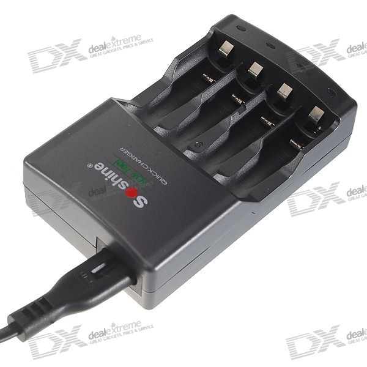
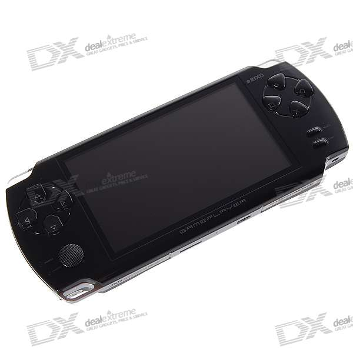

Китайский магазин dealextreme.com я открыл для себя почти три года назад. Не помню уже как набрёл, но заказал там тогда зачем-то наручные часы и зарядку для пальчиковых аккумуляторов. Часы до сих пор где-то валяются, зарядка до сих пор работает.
Потом были ещё посылки. В общей сложности количество купленных товаров насчитывает уже не один десяток, причём только в настоящее время в дороге ещё посылок наверное семь.

Оплачиваю товары картой Альфа-Банка, привязанной к аккаунту PayPal. Вроде как есть возможность оплачивать и напрямую, но я по неизвестной причине сразу привязался к PayPal, дополнительных сложностей или расходов при этом никаких не возникает. К тому же, как мне кажется, в случае чего, в PayPal можно написать претензию на продавца, говорят даже помогает, но я этой возможностью ни разу не пользовался.
Доставка бесплатная абсолютно без каких либо условий в любую точку России (на самом деле не только России). Первые два года товары из-за рубежа приходилось получать только на Главпочтамте. Сейчас они доходят и до местного почтового отделения.
Купи-продай
В контексте этого магазина (особенно его низких цен) я как-то даже придумал бизнес.
На мой взгляд, деньги лежали прямо под ногами (я, впрочем, до сих пор так думаю), поэтому я решил сделать собственный интернет-магазин и наполнить его товарами из Dealextreme. Технология была такова. Покупатель заходит в мой магазин, выбирает товар, кладёт в корзину, платит вебманями. Я получаю заказ и деньги, логинюсь в Dealextreme, создаю заказ и указываю получателем покупателя. Профит в размере (если не грубить) процентов 50 остаётся у меня. Profit!
Самое забавное, что ещё в момент программирования модуля оплаты вебманями, когда о магазине не знал вообще никто (я даже не оставил нигде на него ни одной ссылки) в моём магазине заказали сигнализацию для велосипеда и ещё какое-то барахло. Потом я к такому нехитрому бизнесу интерес потерял и магазин забросил.
Теперь перечислю моменты, которые можно обозначить как опыт покупки на Dealextreme.com. (кстати уже около полугода у сайта есть новая версия, расположенная по адресу dx.com)
Опыт покупок на Dx.com
Дилэкстрим — отличное место для покупки всяких мелочей вроде кабелей, зарядников, аккумуляторов, чехлов, наушников, камер.
Самой дорогой на данный момент моей покупкой была подделка под PSP. Китайский PSP, разумеется не воспроизводит оригинальные диски, разумеется экран у него похуже, но для тогда ещё семилетнего сына стал неплохой игрушкой, я закачал на него какие-то игры с Сеги и Денди, сын играл в них какое-то время, а потом ещё долго использовал в качестве мобильного видеоплеера. Плеер обошёлся в 2000 рублей.

Дешёвых покупок было много, я заказывал и вебкамеры пачками, которые потом раздарил, несколько часов, аккумуляторы, игрушки.
Кстати с одной из игрушек вышел инцидент. Марио прилетел в Кемерово с оторванной рукой.
Стоил он, кстати, не совсем копейки (рублей кажется 200). Поэтому я решил попробовать, что значит китайский сервис. Открыл в магазине тикет, написал о проблеме, приложил фотку. На тикет вскоре ответили и предложили на выбор вернуть деньги или выслать нового Марио. Я выбрал нового, теперь у меня их два. Кстати, совсем недавно в магазине появилась возможность общаться и с русскоязычным саппортом.
С той же посылкой была и ещё одна проблема, из которой я, впоследствии, сделал, как мне кажется, довольно важный вывод. В посылке всего было позиций 7, и, к моменту получения, я уже, конечно, забыл, что именно я купил. При распаковке я даже как-то не обратил внимания, поначалу, что вместе с покупками в посылке лежали зачем-то штук 30 согнутых пополам чистых листов А4. Только спустя несколько часов до меня дошло. Согнутые листы в посылке заменяли заказанные керамические ножи. Не вижу логики в действиях китайцев на этот счёт, поэтому уверен, что ножи украли на Почте России, а бумагой добили до нужного веса, чтобы кража вскрылась как можно позже.
Так вот вывод следующий. Не кладите яйца в одну корзину, и заказанные товары в одну посылку. Сейчас я руководствуюсь чётким правилом. Один товар — один заказ. По крайней мере вы сразу обнаружите пропажу, да и проверить её легче прямо на почте. К тому же это помогает, отчасти, решить и ещё одну проблему. Один заказ может достаточно долго болтаться в стадии комплектации, по причине отсутствия одного из товаров. При заказе каждого товара в отдельности вы получите все товары, кроме одного.
Срок доставки товаров колеблется, по опыту, в районе 1,5 месяцев.
Также не рекомендуется делать заказы с января по март. Китайцы готовятся и празднуют свой новый год и на полном серьёзе практически забивают на работу. Каждый год на русскоязычных форумах поднимается в это время вопрос, что тот или иной китайский магазин всё.
Заказывать у китайцев не только можно, но и нужно. Цены на аналоги (а зачастую и те же самые товары) в кемеровских, к примеру, магазинах выше в разы. Обновлённый сайт уже гораздо удобнее старого, китайцы адекватны в обратной связи (в отличие от некоторых сотовых операторов).
Чтобы не нарваться на что-то не отвечающее вашим требованиям читайте форумы и отзывы, которых достаточно много. Что касается качества, то нового Марио из Китая мне выслали по письму и фотке, а вот русские люди, продавшие мне мойку воздуха в «Эльдорадо», которая проработала меньше суток манают меня уже две недели, но об этом наверное завтра.
Если вдруг остались вопросы, с удовольствием отвечу на них в комментариях